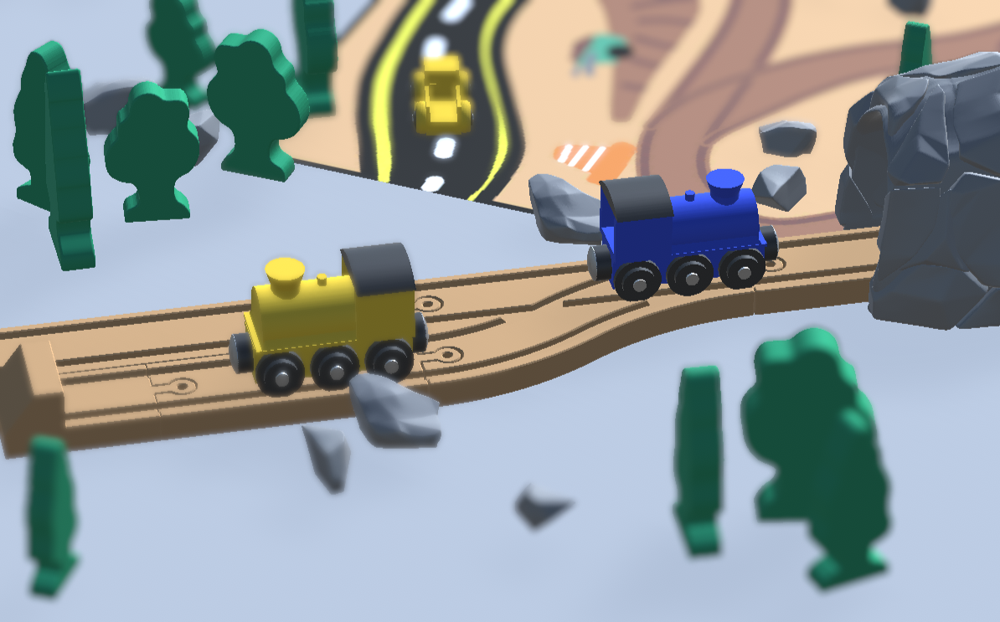

Side Tracked is a small game about wooden trains, which I created during a single-weekend game jam. The game has the player dragging around a small train over a wooden train track, passing through a number of environments on their way.
With the primary mechanic of the game being the dragging of the train along its rail, most of my effort was devoted to making this mechanic work smoothly and feel satisfying to the player. This included experimentation with the hitbox of the train (where should the player be able to click for the train to respond?), how fast the train should move, how far the mouse pointer could deviate from the track for the train to move, where the train should move if the player's mouse is not directly on the track, et cetera. Equally important was ensuring a smooth transition between tracks, and providing feedback to the user when the train could not move.
The game features a simple save system so a player can leave after completing a level or replay a level they have already completed. Although the project was created during a game jam, the code is modular enough that future levels could be added if I ever wish to continue development on the game.
Although the game was brought to a completed state for the game jam, there are still many levels I wished to add to the game but did not have time for, and the levels currently in the game function mostly as an introduction to mechanics I wished to use in more complicated puzzles. A single weekend is very little time to create a full game, it turns out! Nevertheless, I am very happy with the result, and the game was voted as winner of the game jam.
Feel free to contact me if you want to chat! Send me an email at mina.spijk@sindarin27.net.